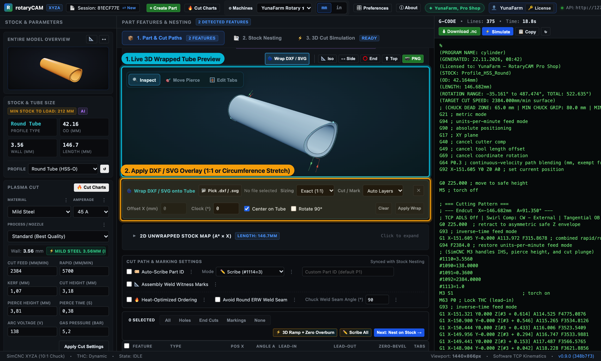

Wrap .dxf or .svg graphics and single-stroke DXF TEXT onto round pipe or HSS (Maker & Pro Shop), or cut structural I-Beam, C-Channel, and Angle Iron on a 4-axis plasma table without a $150k beamline machine (Pro Shop).
TUTORIAL 15 OF 16 • 5 StepsPart A (Maker & Pro): DXF/SVG Tube Wrap + Single-Stroke TEXT ScribePart B (Pro Shop): I-Beam, C-Channel & Angle Iron 4-Axis Beamline
Wrap 2D Artwork onto Tubes & Cut Structural Beams on a 4-Axis Table
Skip manual CAD projections and $150k beamline machines. Drop 2D .dxf or .svg logos, slots, and single-stroke DXF TEXT straight onto round pipe or HSS, or load I-Beam, C-Channel, and Angle Iron .step parts for clean 4-axis flange, web, and miter cuts.
Part A: Tube WrappingDXF / SVG + Hershey TEXT Scribe (Maker & Pro)
Part B: I-Beam Pipeline45° Knee-Clearance & Tip Lead-Ins (Pro Shop)
Part B: Channel & AngleCorner Pivot & Edge-Start Sever (Pro Shop)
PART A • 2D DXF / SVG TUBE WRAPPING & SCRIBING (MAKER & PRO SHOP)
Step 01
Wrap a .dxf or .svg onto Round Pipe or HSS
Add slots, vents, notches, or shop logos to any pipe or tube without rebuilding your 3D STEP model:
Load any round pipe or square/rectangular HSS .step part, then click Wrap DXF / SVG right under (in the header bar above) the 3D Part Preview to open the wrap panel underneath.
Click Pick .dxf / .svg to upload your 2D drawing, then choose Sizing: Exact (1:1) keeps true drawing dimensions, while Stretch to Circumference scales the artwork cleanly around the full tube perimeter.
Position the pattern with Axial Offset X (or check Center on Tube), dial in Clock Angle A (0°–360°), and toggle Rotate 90° to flip orientation along the stick.
Set Cut / Mark to Auto Layers (keeps CUT, SCRIBE, and MARK layer assignments intact) or override all entities to Cut or Mark, then click Apply Wrap.
Step 1: Wrapping a 2D DXF/SVG onto round pipe with Exact (1:1) or Circumference Stretch, Axial Offset X, Clock Angle A, and Cut/Mark layer controls🔍 Click image to enlarge

Step 02
Single-Stroke DXF TEXT / MTEXT Scribing & 0°/360° Seam Unwrapping
Mark part numbers, heat lot codes, and weld alignment text straight from your CAD drawing with zero double-line outline tracing:
Single-Stroke Hershey Conversion: Any TEXT or MTEXT entity placed on a scribe or mark layer converts automatically into clean Hershey single-stroke toolpaths for your EasyScribe, air scribe, or low-amp plasma marker.
Continuous 0°/360° Seam Unwrapping: Artwork or text that crosses the 0°/360° rotary boundary unwraps continuously without splitting contours or snapping back around the chuck.
Single-File & Pack Mode Parity: Wrapped cuts, logos, and scribed text follow every 180° flip and ΔA roll in Stock Nesting identically to native 3D CAD features.
PART B • OPEN-PROFILE BEAMLINE CUTTING: I-BEAM, C-CHANNEL & ANGLE IRON (PRO SHOP)
Step 03
Structural Beamline Sections Without a $150k Beamline Machine
Closed tubes and open structural shapes behave differently under a plasma torch. RotaryCAM routes Angle Iron, C-Channel, and I-Beam .step solids into a dedicated Open-Profile pipeline (Pro Shop):
Zero Closed-Tube Assumptions: Open profiles have exposed flange tips, inside web pockets, and sharp outside corners. RotaryCAM never wraps lead-ins into empty air or crashes the torch shield into opposing flanges.
Automatic Profile Classification: Drop your structural .step beam in and RotaryCAM detects flange width, web depth, wall thickness, bolt holes, copes, and axial slots automatically.
Step 04
I-Beam: Outside Flanges, 45° Web Knee-Clearance & Axial Slots
I-Beams put a recessed central web between two deep flanges. RotaryCAM plans each zone so your torch clears every lip while keeping cut faces square:
Outside-Only Flange Cutting: Flange bolt holes, copes, and notches cut strictly from the outside faces with tangential tip lead-ins and lead-outs so the arc starts cleanly off the edge or in scrap.
Dynamic 45° Web Knee-Clearance: When cutting inside the recessed central web, RotaryCAM dynamically rolls the A-axis up to 45° so the torch shield clears the top and bottom flange knees without colliding.
Open-Ended Axial Web Slots: Slotted web cutouts and beam-end notches enter cleanly from the open edge and finish without leaving uncut bridge tabs.
Step 4: I-Beam 4-axis beamline cutting showing outside-only flange cuts, tangential tip lead-ins, recessed web knee-clearance, and axial web slots🔍 Click image to enlarge
C-Channel and Angle Iron miters cross sharp 90° heels where standard rotary interpolation stalls or gouges the corner:
Piecewise-Linear Sharp-Corner Pivot Decomposition: Every heel transition splits into three clean stages: Face 1 → pure corner pivot → Face 2. Your chuck rotates cleanly over the sharp corner with zero feedrate stalls or blown-out miters.
Coplanar Split-Face Seam Merging: CAD exports that split a web or leg into multiple coplanar faces are stitched into one continuous cut pass with no extra pierces.
Axial Edge-Start Sever Entries: End severs and open leg cuts lead in tangentially from the outer flange or leg tip, then lock THC across corner transitions for steady cut height.
Step 5: C-Channel 4-axis mitered cut with piecewise-linear corner pivots, coplanar seam merging, and synchronous THC lock G-code🔍 Click image to enlarge